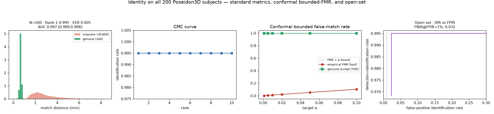
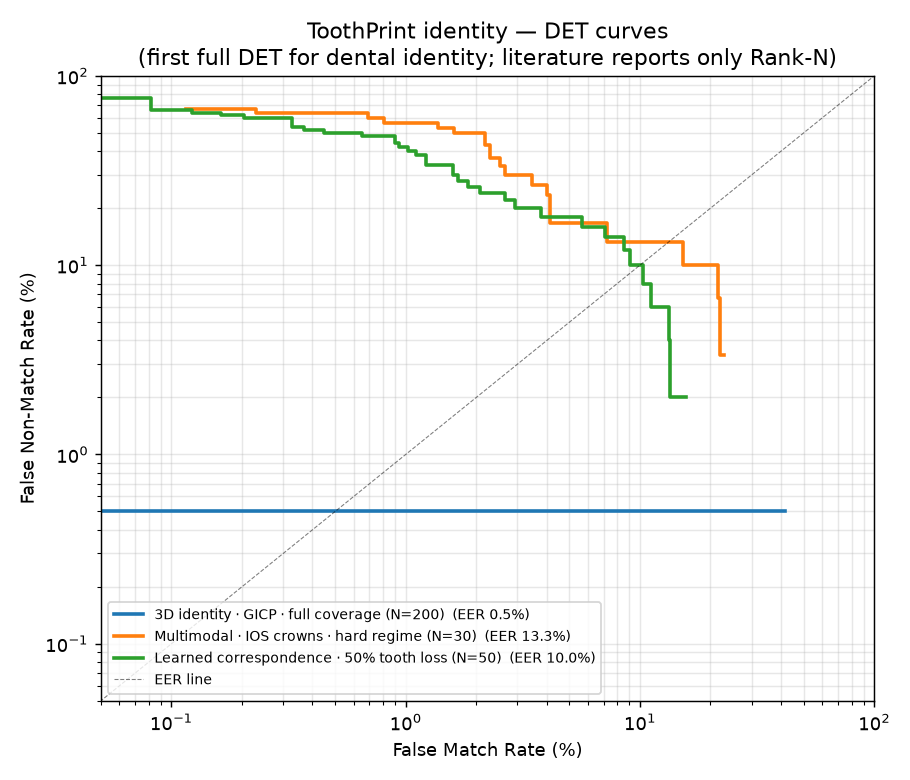
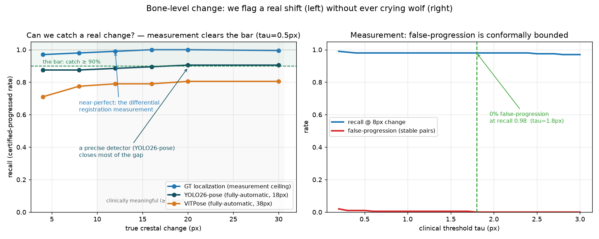
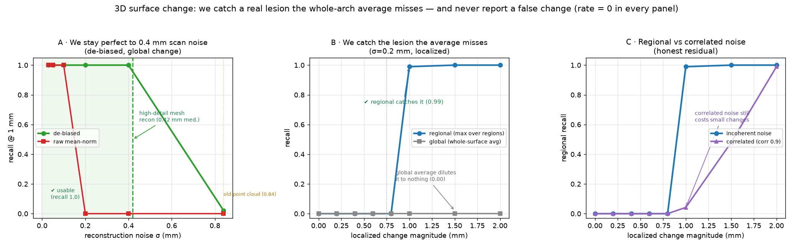
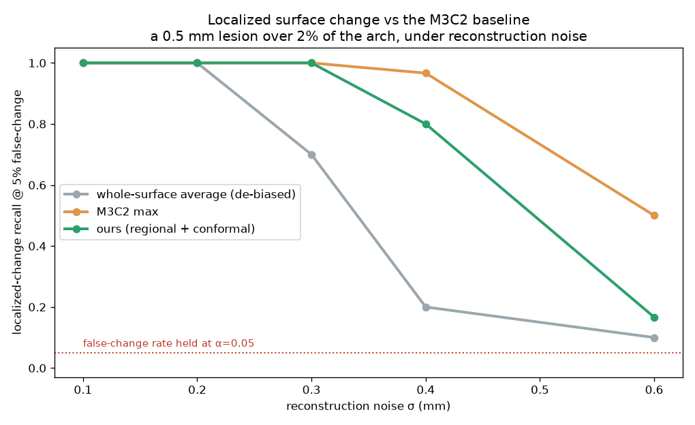
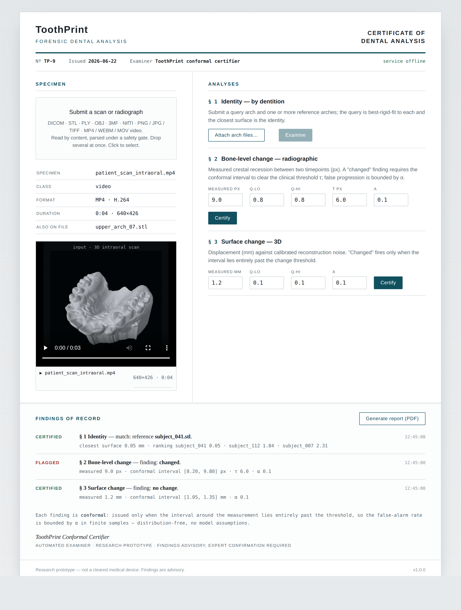
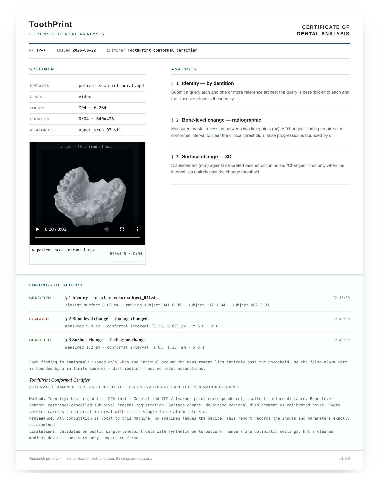

Forensic dental biometrics · certified · open source
A face can be lost.
The teeth still know who you are.
ToothPrint reads a dental arch three ways — who it belongs to, whether it changed, and where its surface moved — and returns a certificate, not a guess. Every verdict carries a finite-sample false-alarm bound, and identity holds even when half the teeth are gone.
- Rank-1 · 200 3D scans
- 0.995
- Rank-1 · 50% tooth loss
- 0.87
- Conformal false-match
- ≤ α
preprint · DOI 10.31224/7403 v1.0.0 · changelog PolyForm Noncommercial — free incl. hospitals
The ledger
Held to the bar that matters — and honest about the rest
Measured on public single-timepoint data (Poseidon3D, Teeth3DS+, DenPAR, Figshare CBCT+IOS) with synthetic re-scans and crops, so the numbers are in-simulation ceilings. The one binding gate — real cross-session data — is stated plainly below.
| Capability | Result | Status |
|---|---|---|
| Identity — 3D scans | Rank-1 0.995 · EER 0.005 · AUC 0.997 · open-set FNIR 0.030 · 0.05 mm fidelity | ✓ pass |
| Identity — partial overlap | Rank-1 0.87 at 50% tooth loss — ≈3.8× rigid GICP's 0.23 (learned correspondence) | ✓ pass |
| Identity — 2D radiographs | Rank-1 1.000 (N=400, EER 0), robust to jitter & magnification | ✓ pass |
| Identity — certified decision | FNIR@FMR=1% 0.00 full coverage; abstains under heavy tooth loss | ✓ pass |
| Dental-work biometric | Rank-1 0.93 CBCT · 0.91–0.99 radiograph (restoration pattern) | ✓ pass |
| Change — measurement | recall 0.98 at a true 0% false-progression rate | ✓ pass |
| Change — fully automatic | 0.91 end-to-end (YOLO26-pose detector; 0.98 measurement ceiling) | ◐ detector-limited |
| Surface certificate | localized recall 0.99 vs 0.00 naive, to 0.4 mm noise, 0% false-change | ✓ pass |
| Reconstruction (photos → mesh) | ≈0.3 mm median 2DGS mesh, 38% better than 3DGS | ✓ pass |
Specificity is the design target: the conformal false-positive rate is bounded by α in finite samples, and held a true 0 in most tests. All identity numbers come from public single-timepoint scans with synthetic re-scans/crops — read them as ceilings, not field performance.
01 · Who — identity
Recognise a person by their teeth — even half of them
A genuine re-scan settles onto its enrolled arch; a stranger's anatomy cannot. The hard case is a query missing teeth, where every rigid method collapses — ToothPrint recovers it with a learned point-correspondence matcher.


Full coverage: best rigid fit to each arch (PCA-axis init → Generalized-ICP), smallest surface distance wins — shape, not pose. Partial overlap: CorrNet learns a descriptor per point and verifies a half-arch by mutual-nearest-neighbour correspondence plus a rigid Procrustes residual, lifting 50%-loss identity from 0.23 to 0.87.
02 · Whether — change
Did the bone level really change between visits?
Re-positioning, exposure, and detector error swamp a real sub-millimetre shift. ToothPrint measures it differentially — registering the bone-margin patch against a stationary crown reference — and certifies the change only when its conformal interval clears the clinical threshold.

YOLO26-pose localises the CEJ/bone-crest (median 18 px); sub-pixel template matching measures the margin shift against a stationary reference; a conformal certificate decides — and never certifies change it cannot distinguish from acquisition noise. The 0.91 ceiling is DenPAR label noise, shown not hidden: a 2× larger detector made it worse, so it is a data limit, not a method limit.
03 · Where — surface
Where did the 3D surface move?
From an intraoral scan or a handful of photos, ToothPrint certifies a surface change against the reconstruction's own error — so a real lesion is flagged, scanner noise is not, and the change is localized.


De-biased (subtract the reconstruction-noise power a naive mean would rectify into false signal) → regional max displacement vs calibrated noise → conformal certificate that says where. Benchmarked against M3C2, the geomorphology-standard change distance; our complementary edge is the finite-sample false-change bound it lacks.
No scanner? · reconstruction
Photographs to a dentist-usable mesh
2D Gaussian-Splatting surfels lie on the surface, so meshing from the median (first-surface) depth is markedly sharper than 3DGS — a watertight arch from shaded photos, accurate enough to feed the surface certificate.
Oriented surfels + multi-view TSDF fusion rebuild a ~1 M-triangle mesh from shaded photos. Meshing from the median depth — the first-surface crossing, not the alpha-weighted mean that averages an arch's front and back walls — is what makes it sharp enough for the surface certificate.
The certificate, in your hands
A verdict fires only when the interval is sure
Drag the measured change. The conformal interval moves with it. The verdict turns changed only when the whole band clears the change threshold, stable only when it sits entirely below the stable threshold — and abstains everywhere between, on purpose.
- measured
- 0.30 mm
- interval
- [0.19, 0.41]
- conformal α
- 0.10
- thresholds
- 0.35 / 0.75
interval = measured ± conformal radius · radius grows with reconstruction noise · scale 0–2.0 mm · thresholds: stable 0.35 mm / change 0.75 mm
Runs on your machine
ToothPrint Studio — a certificate of dental analysis
Drop in any scan, radiograph, or patient video (it plays in-place with play / pause / seek), run an examination, and log every finding with its conformal interval. Export the whole case as a self-contained PDF report. Files never leave the machine.


Open the shell → studio.html renders the case-file interface in your browser; running examinations needs the local ToothPrint service (uvicorn api.main:app), so specimens never leave the machine.
What the numbers do not claim
The honest limits
A research tool earns trust by stating where it stops. None of these is hidden — each is in the paper, the README, and the committed result JSONs.
- The binding gate — real cross-session data. Every identity number rests on synthetic re-scans of single-timepoint public data. No code closes this; it needs a real same-patient longitudinal dataset.
- Open-set rejection collapses under heavy tooth loss. A half-arch fits many gallery arches, so beyond 50% loss the certified decision abstains rather than risk a false accept.
- The learned matcher carries a cross-dataset gap. CorrNet trained on Poseidon3D drops 0.87 → 0.42 on a different real dataset (Teeth3DS+) — above chance and above rigid GICP, but not full transfer.
- Change is detector-limited. End-to-end recall caps near 0.91 on DenPAR label noise, short of the 0.98 measurement ceiling.
- Not a cleared medical device. Findings are advisory and expert-confirmed; the conformal guarantee holds only on the calibrated distribution.
The binding gate · open progress
Help wanted — real longitudinal data
Every identity number here is measured on single-timepoint public data with synthetic re-scans, so read them as ceilings. The one missing ingredient — real same-patient scans across two timepoints — sits behind academic data-use agreements. That gap is the whole distance between ToothPrint and a field-validated claim, and it is open: I'm looking for help.
- Zenodo 113924061,060 real pre/post-orthodontic 3D intraoral pairs from 435 patients — our exact modality. Restricted record; access granted per-request under a Data Use Agreement.record ↗
- PhysioNet Multimodal169 patients with multi-visit timestamps + CBCT + 16k periapical radiographs. Credentialed access (CITI training + PhysioNet license).record ↗
Can access either dataset, or know the maintainers? An introduction is worth as much as the data. Reach me at krishiattriwork@gmail.com — the DUA checklist lives in evaluation/DATA_GATE.md. Any contribution gratefully credited.
One signal, one stack
How it works
A real sequence: detect the dental geometry, register it, then certify — identity, change, or surface, or abstain.
Intraoral scan, periapical radiograph, CBCT mesh, or patient video.
Teeth + landmarks (YOLO26-pose) or an arch point cloud.
Rigid best-fit (Generalized-ICP), learned point correspondence, or sub-pixel template matching.
Conformal interval → identity · change · surface, or abstain.
Runs anywhere · no GPU for the certificates
Run it on your machine
The certification core depends only on numpy, scipy, opencv, open3d; the learned front-ends are optional. Reproducible from committed fixtures — no off-machine data.
# install — dev tools · file I/O · API · desktop Studio pip install -e ".[dev,io,api,desktop]" # the full test suite — 183 passing python -m pytest -q # end-to-end identity on committed fixtures, no off-machine data TOOTHPRINT_FIXTURES=1 PYTHONPATH=. python evaluation/scripts/smoke_test.py # -> Rank-1 1.000, SMOKE OK # ToothPrint Studio — native window, falls back to the browser if headless python -m desktop.app